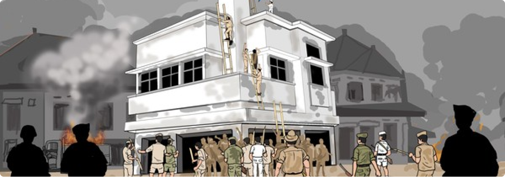

Arsip Digital
23 Oktober, 2024
Pertempuran Surabaya
10 November 1945

Latar Belakang dari Pertempuran Surabaya (10 November 1945)
Pertempuran Surabaya pada 10 November 1945 adalah salah satu peristiwa penting dalam sejarah Indonesia, yang terjadi setelah Proklamasi Kemerdekaan pada 17 Agustus 1945. Pada awal November 1945, situasi semakin memanas. Rakyat Surabaya, yang dipimpin oleh tokoh-tokoh seperti Bung Tomo, bersatu untuk melawan pasukan Inggris. Pertempuran ini menjadi simbol perlawanan terhadap penjajahan.
Faktor-Faktor yang Memicu Terjadinya Pertempuran
- Rasa Ketidakpuasan Rakyat: Rakyat Surabaya merasa tertekan oleh perlakuan kolonial yang terus berlanjut dan menyaksikan ketidakadilan dalam pengelolaan pasca-perang.
- Peran Tokoh Pemuda: Tokoh seperti Bung Tomo dan lainnya menggalang dukungan untuk melawan pasukan Sekutu, memperkuat tekad perlawanan.
- Proklamasi Kemerdekaan: Pengumuman kemerdekaan Indonesia pada 17 Agustus 1945 menimbulkan semangat perlawanan rakyat Surabaya untuk mempertahankan kemerdekaan.
- Keputusan Pengalihan Senjata: Ketegangan meningkat ketika Inggris berusaha menyerahkan senjata tentara Jepang kepada Belanda, dianggap sebagai ancaman kedaulatan Indonesia.
- Sikap Agresif Pasukan Sekutu: Tindakan tegas pasukan Sekutu memperburuk situasi, mendorong rakyat untuk melawan lebih gigih.
Kronologi Singkat
- 15 Agustus 1945: Jepang menyerah, menandai akhir Perang Dunia II, diikuti Proklamasi Kemerdekaan pada 17 Agustus 1945.
- September 1945: Pasukan Inggris tiba untuk menyerahkan kekuasaan kepada Belanda, memicu penolakan rakyat.
- 31 Oktober 1945: Insiden pengusiran pemuda Indonesia oleh pasukan Inggris memicu kemarahan rakyat.
- 5 November 1945: Rakyat Surabaya melawan Inggris, pertempuran kecil mulai terjadi.
- 10 November 1945: Pertempuran besar meletus dengan semangat juang tinggi dari rakyat Surabaya.
Dampak Perang
- Kehilangan Jiwa dan Kerugian Material: Banyak korban jiwa dan kerusakan besar di Surabaya.
- Semangat Perjuangan: Menjadi simbol perjuangan yang menginspirasi daerah lain di Indonesia.
- Konflik Berkelanjutan: Ketegangan terus berlanjut hingga pengakuan kedaulatan Indonesia pada 1949.
Bukti Sejarah

Pahlawan Jendral Sudirman
Pahlawan Jendral Sudirman
Pahlawan Jendral Sudirman